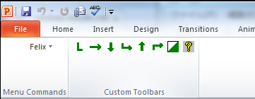

9.2. Review Mode¶
Use Review Mode to review your translation using Felix. Review Mode essentially functions like Translation Mode (see Translation Mode), except that instead of looking up source text to translate, you are looking up translations for review.
To enter review mode, click the half-green, half-white toolbar button on the Felix toolbar.
In Review mode, the colors of the toolbar buttons are reversed.

Note
In PowerPoint 2007 and later, the menu and toolbar appear in the Add-Ins tab. In PowerPoint 2003, an asterisk in square brackets ([*]) appears to the right of the menu item. This helps you tell that you are in Review Mode.
Each of the Review Mode functions is described below.
9.2.1. Look up a Translation¶
Look up a translation in your Felix memory and glossaries. You can select the next segment automatically, or select a segment to look up yourself.
9.2.1.1. Select and look up the next sentence¶
| Toolbar button | |
| Menu command | Lookup Next |
| Keyboard shortcut | Alt + → |
Place the cursor at the beginning of the text you wish to look up, then run the command using one of the methods above. The next segment of text is automatically selected, and sent to Felix as a query. If Felix is not currently running, it will be launched automatically.
9.2.1.2. Look up the current selection¶
| Toolbar button |  |
| Menu command | Lookup |
| Keyboard shortcut | Alt + L |
Select the text you wish to look up, then run the command using one of the methods above. The current selection is automatically sent to Felix as a query. If Felix is not currently running, it will be launched automatically.
Tip
To extend the sentence lookup (e.g. to translate two or more sentences as a single unit), press Ctrl + ALT + E.
9.2.2. Restore a Translation¶
Retrieve a translation from Felix, and automatically insert it at the cursor position.
9.2.2.1. Get the translation, and look up the next sentence¶
| Toolbar button | |
| Menu command | Get And Next |
| Keyboard shortcut | Alt + G |
When you run this command, the current translation displayed in Felix is automatically retrieved, and entered at the cursor position. PowerPoint Assist then looks up the next sentence automatically, and sends it to Felix as a query.
9.2.2.2. Restore the translation¶
| Toolbar button | |
| Menu command | Get |
| Keyboard shortcut | Alt + ↓ |
When you run this command, the current translation displayed in Felix is automatically retrieved, and entered at the cursor position.
9.2.3. Correct a Translation¶
Correct the current translation
9.2.3.1. Correct a translation, and look up the next sentence¶
| Toolbar button |  |
| Menu command | Set And Next |
| Keyboard shortcut | Alt + S |
Place the cursor at the end of your translation, then run the command using one of the methods shown above. The text of your translation is automatically selected, and replaces the current translation shown in Felix. If you have already selected a segment of text, that will be registered. PowerPoint Assist then looks up the next sentence, and sends it to Felix as a query.
Note
There must be an active translation in Felix in order to use this function.
9.2.3.2. Correct a translation¶
| Toolbar button |  |
| Menu command | Set |
| Keyboard shortcut | Alt + ↑ |
Place the cursor at the end of your translation, then run the command using one of the methods shown above. The text of your translation is automatically selected, and registered in Felix as the translation for the current query. If you have already selected a segment of text, that will be registered.
Note
There must be an active query in Felix in order to use this function.
9.2.4. Save Translation Memory and Glossary¶
Save your translation memory and glossary files. Felix will prompt you for a file name and location if the memory or glossary is new.
9.2.5. Find concordance¶
You can find a word or phrase in your translation memory to see how you have translated it in the past. This feature is called “concordance.” To find the concordance for a word or phrase, select it and then select Felix ‣ Find Concordance.